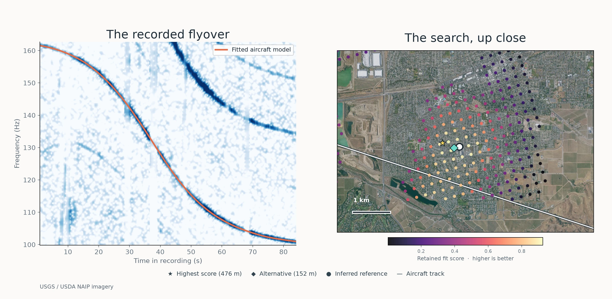
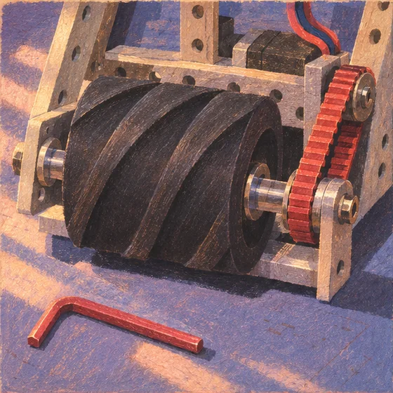

Follow the bright curves as you listen. The pitch drops as the plane passes. A match is a candidate, not automatically a location.Recording: Praveen Pathak · CC BY 4.0
A passing aircraft leaves a curve in a recording. I’m building DOPPLERGEIST to match that changing pitch against historical flight tracks.
See the location searchHistorical run · inconclusive
One recording, many possible microphone positions.
This search compared the recording with nearby flight tracks in a constrained region and time window. It did not establish a location: 187 track evaluations exceeded the supported trajectory model, leaving the search incomplete.

The figure could not load. Use the full-size figure or the source notes below.
Colors show fit scores, not probabilities. The star is the highest score; the circle is an inferred reference, not surveyed truth. This cropped map does not show every searched point.
The pattern continues in both directions. Each row continues the same line.
Fraction of all integers selected: 3/7
No pair is 2, 5 or 9 apart.
Why is 3/7 the limit for these gaps?
Within any seven consecutive integers, gaps 2 and 5 form a cycle: 0, 2, 4, 6, 1, 3, 5, then back to 0 (shifted to that block). Two neighbors cannot both be kept, so at most three of the seven fit.
That limits every block of seven, not just repeating patterns. Repeating 0, 1, 4 reaches the bound and also avoids 9. This explains one example; the linked proof handles general triples.
Choose integers, but never choose two that differ by 2, 5 or 9. Here, a seven-position pattern repeats along the whole number line.
The pattern 0, 1, 4 fills three of every seven positions without a forbidden gap. This is a worked example from the Haralambis result, not a proof of the general theorem.
Two workers take the same locks in opposite orders. Each can hold the lock the other needs, so both wait.
Battery workerOwns GBAP→Waits for ECMX
Controller workerOwns ECMX→Waits for GBAP
A high load average can mean tasks waiting, not a busy CPU.
Before
In _Q08 and _Q09
Acquire ECMX → call GBAP
After
Move the call ahead of the lock
Call GBAP → acquire ECMX
GBAP stays serialized: one call at a time. The builder works from the machine’s own firmware table and refuses unsupported layouts.
Before accepting a build
Original methods must round-trip byte for byte. The complete corrected disassembly must match the intended change.
Experimental local Linux override, not a BIOS flash. A related host-specific override has booted; the public builder’s exact output and long-term prevention are not yet hardware-verified.
A plan can become outdated while it is being written. This replay keeps the plan and eventual evidence fixed, but changes when other investigators report.
Evidence arrives during planning
Plan uses revision 1At the action check 3
Outdated plan rejected
The proposed probe is replaced with a request for corroborating evidence.
request_corroboration
Evidence arrives after the check
Plan uses revision 1At the action check 1
Fresh proposal-only probe allowed
The same probe passes first. The same conflicting evidence arrives later.
targeted_canary_probe
Fresh does not mean approved. A new plan at revision 3 reaches the check at revision 3 and is still blocked by conflicting evidence.
Deterministic prototype replay, with hypotheses frozen from a historical model run. The probe is proposal-only: no production changes, and no rollback authorized. This is not a speed comparison.
I’m a senior at the Illinois Mathematics and Science Academy. Some of my work lives in proofs and code. Some of it has to run a robot. Read more about me.

Code that has to move something.
I lead programming for Titan Robotics, FIRST Team 2022. Our team of ten writes the robot’s Java code. I teach rookies, review code, and dig through match logs when the robot does something we didn’t ask it to.
Run. Reverse. Stop.
public void run() {
setVoltage(DEFAULT_VOLTAGE);
}
public void reverse() {
setVoltage(-DEFAULT_VOLTAGE);
}
public void stop() {
setVoltage(0);
motor.stopMotor();
}
With Dr. Peter Dong’s group in IMSA–CMS through Fermilab, I write software for a search for a doubly charged Higgs boson.
Ordinary collisions can look like the signal. At high masses, simulations give us very few of those lookalikes to count. Nathan Catlett and I developed a way to estimate that background, and I wrote most of the code for it.
Research abstract
Conservative Estimate of the Doubly Charged Higgs Boson Background Using Kernel Density
I’m co-president of Epoch, our computer science club, where I’ve taught Linux workshops. I was also a teaching assistant for Elements of Computing Systems I and II.
I played varsity Scholastic Bowl, too. At Scobol Solo I won biology and tied for first in chemistry.
Letters & links.
From Cinna’s desk
Your stops on this visit
To whoever picked this up.
1337isnot1337.github.io
A postcard for you.
Combinatorics
Solved conjectures
I curate this collection of proofs and counterexamples with GPT-6.2
Astra. The notes are unrefereed. Each entry links to its argument,
and the catalogue records which results have complete or partial
Lean formalizations.
A card game that never ends
This three-player War deal uses 23 different ranks. Each player
reveals a card. The highest wins all three and collects them in
descending order.
A 15B 10C 4
Where the cards go
Hand sizes repeat every six turns. The full card order takes 90.
ABC
Compare every card with the start
A repeat means the same cards in the same order, in all three hands. Equal hand sizes alone are not enough.
Starting deal: every position matches.
Start above; current below. A dashed border means that position differs from the start. Read positions left to right; the first card is next to play.
Can a recording tell you where the microphone was? DOPPLERGEIST
compares an aircraft’s changing pitch with historical flight tracks.
Matching needs a justified UTC start time or a bounded time window.
Frequency ↑ 100–400 Hz
0:00Time →1:25
The bright curves are tones from the aircraft. Follow them
from left to right: the pitch falls as it passes.
For my computing systems capstone, I extended the Hack CPU with a
two-stage pipeline, a global-history branch predictor, and fused
instructions. Like a train approaching a switch, the processor has
to pick a route before it knows whether a jump will be taken.
Train the predictor
Try one entry in the prediction table. Feed it jump outcomes and
watch its two-bit counter change.
00011011
01 · Weakly predicts not taken.
The counter guesses
before seeing the next outcome. Try a few taken jumps, then switch.
When the guess is wrong
A loop subtracts 5 until D reaches zero. See how the processor recovers when it predicts one more jump.
Recorded RTL simulation190 ns
Fetch Reading ahead
Address 5D = D − A
Wrong path · will be discarded
Execute Resolving the instruction
Address 6D;JGT
D is zero · do not jump
Register D = 0A = 5 throughout
Predicted next address: 5. Correct next address: 7.
At the next rising edge (195 ns), fetch redirects to 7 and an inserted NOP replaces the wrong-path instruction. D stays zero.
Five snapshots from the existing testbench, 170–210 ns. These are simulation timestamps, not hardware speed measurements. An inserted NOP is a pipeline bubble, not program address 0.
A school schedule is easier to read when you can see which room you
need for each class period. I built a Rust tool that turns an IMSA
schedule into a day-by-day room list.
From class rows to room lists
Example data, not my class schedule
Selected input fields
Mathematics2(A,C-D) · S1 · Room A113
Physics3(B,I) · S1 · Room B204
S1 room list
Periods 2–3 shown; all other periods are free in this example.
A day
Period 2
A113
Period 3
Free period
B day
Period 2
Free period
Period 3
B204
I day
Period 2
Free period
Period 3
B204
C day
Period 2
A113
Period 3
Free period
D day
Period 2
A113
Period 3
Free period
The tool processes your schedule in your browser. Nothing is uploaded or saved.
Conway asked for a graph with 99 vertices and 14 neighbors per vertex.
Adjacent vertices must share exactly one neighbor; nonadjacent
vertices must share two. Whether it exists is still open.
My work includes an unrefereed proof that such a graph has
at most 120 induced 3 × 3 rook grids.
A rook connects positions in the same row or column. Choose one
position, or compare a pair: which neighbors do both share?
9 vertices · 18 edges · 4 neighbors each
Crossing lines are not extra vertices.
Dark positions are selected; lavender positions are shared
neighbors when comparing a pair. This nine-vertex grid shows the
counting rule, not a 99-vertex solution: each square has four
neighbors, not fourteen.